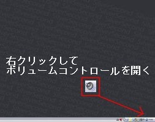
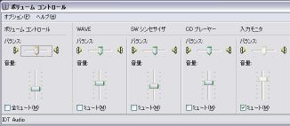
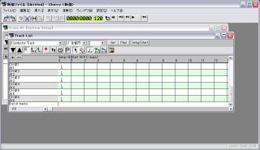
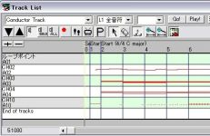
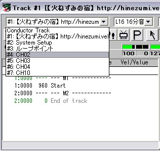
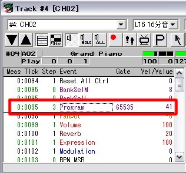
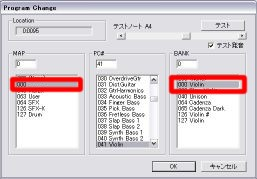

【目標】
一部または全部の音の鳴らないMIDIファイルの音が出る状態にします。
サンプルとして通常の音楽再生ソフトでは普通に再生され、
ウディタではメロディが鳴らなくなるMIDIを用意しましたので、動作確認用にお使いください。
sample.mid(右クリック→対象をファイルに保存)
※注意※
状況によってはMIDI素材自体を改変することになります。
ダウンロード先の素材利用規約を必ず読み、トラブルが起こらないようくれぐれも気をつけてください。
|
【1】 ※この作業は予想外の音が出る可能性があるため、 ヘッドホン等は外してスピーカーで音を聴くことをおすすめします。 まず始めに音の環境を確認します。 デスクトップの通知領域(右下の部分)から音量を右クリック、 ボリュームコントロールを開きます。 各項目を確認し、ボリュームが0になって無いか、 「入力モニタ」以外のミュートのチェックが外されているかを確認します。 この状態で一度MIDI素材の音を聴きます。 自分で使っている音楽再生ソフト(Windows Media Playerなど)で 聴いたときと比べて抜けている音がある場合はウディタで 対応していない音色を使った素材なので、【2】に進みます。 |
  |
|
【2】 ウディタ側で抜けている音は素材の中身を 変更することで応急処置ができます。 これは素材の改変になりますので、 MIDI編集のためのソフトが必要になります。 面倒な設定の不要なものとして以下のものがありますので、 今回はこのソフトを説明のために利用し、 音がきちんと再生されるように素材を改変します。 Cherry MIDIシーケンサ http://www.vector.co.jp/soft/win95/art/se071842.html （Vector） ダウンロードと解凍を行い、 フォルダを整えたらcherry.exeを起動してください。 各ウィンドウの解説 メインウィンドウ：ファイルの保存、ソフトの設定、曲の再生等 Track Listウィンドウ：曲全体の情報を表示するウィンドウ Track#1〜ウィンドウ：各パートの編集をするウィンドウ |
 |
|
【3】 「ファイル」より「開く」を選択し、 編集したいMIDIファイルを読み込みます 読み込みが終わると「Track List」ウィンドウに 赤い線で音のデータが表示されるので確認します。 (サンプルの場合はCH2、CH3、CH4、CH10のパートに 音の情報が入っています) |
 |
| 【4】 楽器の情報を確認していきます。 Track#1〜ウィンドウを表示し、左上のボックスから 音の情報が入っているパートであるCH2を選択します。 すると、その下にデータが出ますので、 その中から「Program」を探し、ダブルクリックします。 |
  |
| 【5】
すると、右図のような音色を選択する画面が出るので、 MAPの番号を"000"番、BANKの番号を"000"番に設定します。 設定し終わったらOKを押します。(PC#はそのまま) これで、このパート(CH2)はウディタで使える音色になりました |
 |
| 【6】
どの音色のパートが鳴っていないかがわかればそこだけを直せば良いのですが(sampleはCH2のみ) わからなければ打楽器パート(CH10)以外の全部のパートで【4】〜【5】を繰り返します。 (sampleの場合はCH2、CH3、CH4の3つに対して設定) あとはウディタ上で鳴り方を確認して終了です。 |
＜執筆者：ユノ＞